FlashInfer：为大模型推理服务打造的高效、可定制注意力引擎
FlashInfer: Efficient and Customizable Attention Engine for LLM Inference Serving
GitHub star 为 2026-10-20 的快照。阅读状态、进度与收藏只保存在你的浏览器里。
逐节精读
这部分按论文（arXiv v2，即 MLSys 2025 正式版）的章节顺序，用本站自己的话把整篇论文从头讲一遍；附录里的 GQA 头融合、稀疏读取的开销、工作区管理和附加实验，放进了正文对应的小节。读懂某个概念需要的背景知识，会在第一次用到它之前单独讲清楚（青色框）。这篇论文在 arXiv 上以 CC BY-SA 4.0 发布，所以页面里直接使用了论文的原图，并在每张图下说明怎么看；原图没画到的概念，用本站的示意图补上。标“推算”的数字是本站根据论文数据算出来的，不是论文原话。每节末尾有英文原文的链接。
0 导读：这篇论文解决什么问题
大模型推理服务里，注意力是最“难伺候”的一个算子。矩阵乘法的形状由模型决定，每一步都差不多；注意力却要读每个请求各自的 KV 缓存，而这些缓存长短不一、存放方式五花八门：vLLM 把它切成 16 个 token 一页，SGLang 按单个 token 管理并让多个请求共享前缀，投机解码要在一棵草稿树上算注意力，StreamingLLM 只保留开头几个 token 和最近一段窗口。再加上模型本身的变体（分组查询、滑动窗口、分数截断、ALiBi、不用 softmax 的注意力……），每个推理引擎都不得不自己写、自己维护一套注意力内核。
FlashInfer 想做的是一个通用的注意力引擎：内核内部的算法仍是 FlashAttention-2/3 那一套，外面加了三层设计。第一层是数据结构：把所有 KV 存放方式都看成同一种块稀疏矩阵，一套内核就能读所有布局，并且可以把共享前缀和各自的后缀拆成两种块大小分别算（可组合格式）。第二层是编译：用户用几个小函数描述自己的注意力变体，FlashInfer 用即时编译（JIT）把它们填进 CUDA 模板，生成专用内核。第三层是运行时：每生成一步，先在 CPU 上根据各请求的长度做一次负载均衡的规划（plan），再让 GPU 按计划执行（run），而且执行部分可以被 CUDA Graph 录制下来反复重放。
论文报告的主要结果是：接入 SGLang 后，相对 SGLang 自带的 Triton 注意力后端，生成每个 token 的间隔（ITL）缩短 29%–69%；为 StreamingLLM 生成的融合内核让长上下文推理延迟降低 28%–30%；在一次生成多个回答的场景里，可组合格式带来 13%–17% 的提速。这篇论文获得了 MLSys 2025 的杰出论文奖（Outstanding Paper Award），FlashInfer 也已经是 vLLM、SGLang 等主流引擎的注意力后端之一。
读完这部分，你应该能回答这几个问题：
- 为什么解码阶段的注意力几乎总是受显存带宽限制？分组查询注意力（GQA）为什么能改善这一点？
- “注意力状态”是什么？为什么分段算出的注意力可以精确地合并起来？
- 分页表、基数树、树状投机解码为什么都能写成同一种块稀疏矩阵？块的形状由谁决定？
- 多个请求共享一段长前缀时，可组合格式到底省了什么？
- 负载均衡调度怎么切分长请求、怎么分给线程块？它为什么既要“动态”又要能被 CUDA Graph 录制？
- 29%–69% 这些数字是和谁比、在什么条件下测出来的？哪些地方优势会变小甚至变成劣势？
- 今天 vLLM 和 SGLang 在哪些 GPU 上默认使用 FlashInfer？
1 引言：推理服务里的注意力，和训练时有什么不同
训练时，一个批里的序列通常被补齐或打包成整齐的张量，注意力的形状是固定的：多少条序列、每条多长、多少个头，事先全知道。推理服务完全不是这样。服务端同时在处理很多个请求，每一步要算的注意力至少有三种形态：
- 预填充（prefill）：一个新请求刚到，要把它的整段输入一次性算完。这时 query 的行数等于输入长度，KV 的长度也等于输入长度。
- 解码（decode）：每个正在生成的请求，这一步只算 1 个新 token。query 只有 1 行，KV 却是这个请求到目前为止的全部历史，可能有几千上万行。
- 追加（append，也叫增量预填充）：query 有若干行，KV 比 query 长。分块预填充（把一段长输入拆成几块，分几步算完，见 Sarathi-Serve 精读页）、投机解码的验证（一次检查草稿模型猜的几个 token）、多轮对话里在已缓存的历史后面接新输入，都属于这种。
在连续批处理（continuous batching）下，这些形态会混在同一个批里：同一步可能有 3 个请求在做预填充、60 个请求在解码，而解码的这 60 个请求，有的历史只有 50 个 token，有的有 3 万个。另一方面，KV 缓存也不再是一整块连续的张量：vLLM 把它切成固定大小的页，用一张块表记录每个请求的页在哪里（见 vLLM 精读页第 4 节）；SGLang 用一棵基数树按 token 管理缓存，让前缀相同的请求共用同一段 KV（见 SGLang 精读页第 3 节）。注意力内核必须能直接从这些分散的位置读数据。
论文把困难归成两类。第一类来自工作负载。服务里的注意力既有处理输入的预填充，也有成批的解码；请求之间可能共享前缀；投机解码又带来了树状的注意力模式。更麻烦的是，一个批里各请求的 query 长度和 KV 长度都不同，而且每一步都在变。如果内核按“每个请求分给一组线程”的朴素方式来分工，长请求就会拖住整个批，这叫负载不均衡。要做到最好，内核的分工方式必须随着每一步的长度分布动态调整。
第二类来自硬件和模型。在存储一侧，分页、基数树这些格式对控制显存碎片、提高缓存命中率至关重要，内核必须适配它们。在计算一侧，每一代 GPU 都需要专门编排的流水线才能发挥性能（FlashAttention-2 针对 Ampere，FlashAttention-3 针对 Hopper）。同时，模型里的注意力本身也越来越多样：分组查询注意力（GQA）和多查询注意力（MQA）、各种专门的掩码、对注意力分数做截断或换掉 softmax 的变体。
这两类复杂性叠在一起，结果就是每个推理系统都只针对自己关心的那一部分特性实现一套注意力，维护成本高，而且容易错过优化机会。FlashInfer 的回答是一个“基于代码生成的注意力引擎”，核心是三个设计，分别对应后面的 §3.1、§3.2 和 §3.3：
- 用块稀疏格式统一 KV 缓存的存放方式。无论是分页还是基数树，都写成同一种块稀疏矩阵；块的大小可以调，小到一列只有一个 token（论文称为向量级稀疏）。
- 用可定制的模板加即时编译支持各种注意力变体。用户写出变体的定义，FlashInfer 把它翻译成高度优化的块稀疏内核。
- 用动态的负载均衡调度应对输入的变化。tile 大小在编译时选定，具体怎么把工作分给线程块在运行时决定；同时保证与 CUDA Graph 兼容——后者要求每次执行的配置完全不变。
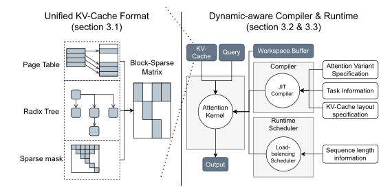
论文的贡献清单也就是这几项：灵活的块稀疏与可组合格式、可定制的注意力模板与 JIT 编译、与 CUDA Graph 兼容的动态调度框架，以及内核级和端到端的评测。FlashInfer 已经接入 vLLM、MLC-Engine 和 SGLang，论文在标准的服务基准之外，还测了长上下文推理和并行生成两个新场景。
- FlashInfer 不是一种新的注意力算法，也不做任何近似。它算的仍然是标准的精确注意力，内核内部沿用 FlashAttention-2/3 的分块与在线 softmax；它的贡献在于“怎么读各种布局的数据、怎么生成各种变体的内核、怎么在长短不一的请求之间分配工作”。所以接入它不改变模型输出的数学含义（浮点舍入顺序可能不同，见 §3.6）。
- FlashInfer 也不是一个推理服务引擎。它不决定哪些请求进批、KV 缓存怎么分配和淘汰，这些仍由 vLLM、SGLang 这样的引擎负责；FlashInfer 接收引擎给出的块表或索引，只负责把注意力算快。
2 背景：算术强度、注意力状态的合并、块稀疏格式
2.1 FlashAttention 与算术强度：解码为什么总是受带宽限制
GPU 做一次计算，要先把数据从显存（HBM）搬到芯片上。算术强度（operational / arithmetic intensity）指每从显存搬 1 个字节，能做多少次浮点运算（FLOP/字节）。把 GPU 的峰值算力除以峰值带宽，得到一个“拐点”：H100 SXM 的 FP16 稠密峰值约 989 TFLOPs/s、HBM 带宽约 3.35 TB/s，拐点约 295 FLOP/字节；A100-40GB 是 312 TFLOPs/s 和约 1.555 TB/s，拐点约 200 FLOP/字节（厂商规格，比值为推算）。一个计算的算术强度低于拐点，就是访存受限，速度取决于搬数据有多快，算力会闲着；高于拐点则是计算受限。这个判断方法在 FlashAttention 精读页 2.2 节有更详细的讲解。
FlashAttention 的做法是：把 query、key、value 切成小块搬进芯片上的共享内存，用在线 softmax 边读边更新输出，从而不必把 \(N\times N\) 的注意力矩阵写回显存（详见 FlashAttention 精读页第 3 节）。FlashAttention-2 和 FlashAttention-3 又分别针对 Ampere 和 Hopper 优化了循环顺序和流水线。FlashInfer 直接建立在这些工作之上。
论文给出 FlashAttention 的算术强度是 \(O\!\left(\frac{1}{1/l_{qo}+1/l_{kv}}\right)\)，其中 \(l_{qo}\) 是 query（也是输出）的长度，\(l_{kv}\) 是 KV 的长度。这个式子可以自己推一遍。以一个注意力头、FP16（每个数 2 字节）为例，忽略因果掩码：
这里 \(d\) 是头维度，分子是两次矩阵乘的浮点运算数，分母是搬运的字节数，\(d\) 正好约掉。在服务场景里 \(l_{qo}\le l_{kv}\)（预填充时相等，解码和追加时 query 更短），所以分母里 \(1/l_{qo}\) 占主导，算术强度约等于 \(l_{qo}\)：每读一遍 KV，有多少行 query 在用它，算术强度就是多少。
把具体数字代进去（推算）：KV 长 4096 时，解码（\(l_{qo}=1\)）的算术强度约为 1 FLOP/字节，比 H100 的拐点低约 300 倍，所以解码注意力几乎完全受显存带宽限制，衡量它的指标应当是“达到了峰值带宽的百分之几”；一次预填充 4096 个 token 时算术强度约 2048，远高于拐点，衡量它应当看“达到了峰值算力的百分之几”。论文 §4.2 正是用这两种利用率分别评价解码和预填充内核的。
论文还指出，把更多请求放进一个批（batching）不会改变注意力的算术强度。原因是每个请求读的是自己的 KV，请求之间不共用，批变大只是把更多“强度为 1 的小任务”放在一起，每读一个字节仍然只做那么多运算。这一点和前馈层不同：前馈层的权重被批里所有请求共用，批越大强度越高（见 vLLM 精读页第 1 节）。
能提高解码注意力强度的是 MQA 和 GQA。它们让多个 query 头共用同一组 KV 头，组大小记作 \(g=H_{qo}/H_{kv}\)。读一遍某个 KV 头，现在有 \(g\) 个 query 头在用它，相当于 query 的行数变成了 \(g\cdot l_{qo}\)，算术强度提高到 \(O(g\cdot l_{qo})\)。例如 Llama 3.1 8B 有 32 个 query 头、8 个 KV 头，\(g=4\)；解码时强度从约 1 提高到约 4。前提是内核真的让这 \(g\) 个头共用一次读取——这就是 §3.4 讲的“头组融合”要做的事。
2.2 注意力状态的合并：分段算出的注意力怎样精确拼起来
softmax 的分母要对一整行所有分数求和，看起来必须等整行算完才能归一化。FlashAttention 的在线 softmax 说明：只要在每一块算完后记下“这一块分数的最大值和指数和”，就可以把两块的部分结果按比例缩放、相加，得到和一次算完完全相同的结果（推导见 FlashAttention 精读页 3.2 节）。把“最大值 + 指数和”合成一个数，就是 log-sum-exp：\(\mathrm{LSE}=\log\sum_i e^{s_i}\)，它记录的是这一段分数的“总分量”。
Block-Parallel Transformer 等工作把这个性质推广成一条一般规则：对同一个 query，在不同的 KV 子集上分别算注意力，只要同时保留输出和“规模”，结果就可以合并。论文的写法是：设 \(\mathbf q\) 是一个 query，\(\mathcal I\) 是一组 KV 的下标，定义这组上的注意力规模和注意力输出：
（缩放系数 \(1/\sqrt d\) 被吸收进 \(\mathbf q\) 里，不影响讨论。）二者合起来称为这组 KV 上的注意力状态 \([\mathbf O(\mathcal I),\ \mathrm{LSE}(\mathcal I)]\)。关键性质是：两个不相交的子集 \(\mathcal I\)、\(\mathcal J\) 的状态，可以用一个运算 \(\oplus\) 合成它们并集上的状态：
直观地说，两段各自的输出是“段内的加权平均”，合并时再按两段的总权重 \(e^{\mathrm{LSE}}\) 做一次加权平均。用一个小例子走一遍（数字是本站编的）：一个 query 面对 3 个 key，分数分别是 \(0,\ 0,\ \ln 2\)，对应的 value 是标量 \(1,\ 3,\ 6\)。
- 一次算完：\(e^{s}\) 为 \(1,1,2\)，总和 4，权重 \(1/4,1/4,1/2\)，输出 \(0.25\times1+0.25\times3+0.5\times6=4\)。
- 分两段：前两个 key 为一段，\(\mathrm{LSE}_1=\ln 2\)，段内输出 \((1+3)/2=2\)；第三个 key 为一段，\(\mathrm{LSE}_2=\ln 2\)，段内输出 6。合并时两段的总权重都是 \(e^{\ln 2}=2\)，输出 \((2\times2+2\times6)/4=4\)，合并后的 \(\mathrm{LSE}=\ln 4\)。和一次算完完全一致。
因为 \(\oplus\) 满足结合律和交换律，任意多段状态可以按任意顺序合并。Ring Attention 和 Flash-Decoding 都利用了这一点：前者把一条极长序列的 KV 分给多张 GPU，后者在解码时把一条长 KV 切成几段交给不同的线程块并行算，再合并。FlashInfer 更进一步，把注意力状态定为所有注意力运算的标准输出，把 \(\oplus\) 定为标准的归约运算——论文的类比是：它在注意力里的地位，相当于矩阵乘法里的“求和”。后面的可组合格式（§3.2）和负载均衡调度（§3.6）都建立在这条规则上。
2.3 块稀疏与向量稀疏：稀疏矩阵怎么存，怎么用上 Tensor Core
一个大部分元素为零的矩阵，只存非零元素更省空间。最常用的 CSR（compressed sparse row）格式用三个数组：indices 按行依次记下每个非零元素所在的列号，data 记下它们的值，indptr 记下每一行的非零元素在 indices 里从第几个开始（第 \(r\) 行的非零元素是 indices[indptr[r] : indptr[r+1]]）。
BSR（block sparse row）把同样的思路用在“块”上：矩阵被划成大小为 \((b_r,b_c)\) 的小块，只要块里有非零元素就整块存下来；indptr 和 indices 记的是块行和块列。块内部是一个稠密小矩阵，所以可以直接交给硬件的矩阵乘单元。
和 CSR 比，BSR 有几个对硬件友好的特点：非零元素聚成连续的小矩阵，寄存器里的数据可以反复使用；块的形状和 GPU、NPU 的矩阵乘单元匹配；还能整块跳过空白区域，减少计算。当块内的计算正好对齐硬件的矩阵乘指令（比如 NVIDIA 的 mma）时，BSR 的效率最高。
问题在于 Tensor Core 的指令有最小尺寸，通常是 16（更新的 GPU 更大），所以大多数块稀疏内核的块大小都是 \((16,16)\) 的倍数，很多注意力库甚至要求 \((128,128)\) 的倍数。可是 KV 缓存的稀疏是很细的：SGLang 按单个 token 管理缓存，一列就是一个 token；块太大，就要把大量无关的 token 也读进来。
已有研究（Chen 等 2021、Magicube）给出了解决办法：先收集，再稠密计算。以矩阵乘 \(AB\) 为例，\(B\) 的稀疏块可以小到 \((16,1)\)，也就是只要求一行里 16 个元素连续；内核先把散落在各处的这些行搬进共享内存里一段连续的区域，拼成一个稠密的小矩阵，再用普通的稠密 Tensor Core 指令计算。这种块宽为 1 的稀疏称为向量稀疏。FlashInfer 在此基础上支持任意的列块大小 \(B_c\)，包括 \(B_c=1\)。
3 设计：数据结构、计算模板、运行时调度、编程接口
3.1 块稀疏矩阵：把各种 KV 布局写成同一种格式
PagedAttention 和 RadixAttention 这类 KV 管理方式有一个共同点：KV 缓存不连续存放，但最小的管理单位是固定的——一页（若干个 token）或者一个 token，每个单位是一个形状为 \((H,D)\) 的张量（\(H\) 个头、每头 \(D\) 维）。它们的目标都是减少显存碎片、提高复用和缓存命中率。论文指出，这些不同的数据结构都可以统一成一个块稀疏矩阵，看下面的原文图 2。
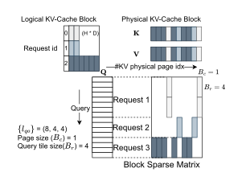
用自己的例子再走一遍。假设一个解码批里有 3 个请求，每个请求这一步只有 1 行 query，显存里有 10 个物理页。vLLM 式的块表记录了每个请求按顺序用到的物理页：
kv_indptr、kv_indices、kv_last_page_len 这三个数组描述 KV 布局的。本站示意图，页号与长度为编的例子。页表和稀疏矩阵的等价关系并不是新发现：2014 年的 SPGrid 就用 CPU 的页表硬件（TLB）来加速稀疏网格的索引。论文强调的是，稀疏矩阵能表示的远不止页表和基数树：投机解码里的树状注意力（每个草稿 token 只能看见树上自己的祖先）、Quest 这类按重要性挑选 KV 页的重要性掩码，也都是稀疏矩阵。下表把常见的几种 KV 管理方式对应到块稀疏矩阵上：
| KV 管理方式 | 写成块稀疏矩阵后 | 列块宽 \(B_c\) |
|---|---|---|
| vLLM 的分页 KV | 每个请求一个块行，非零块是它的物理页 | 页大小（如 16） |
| SGLang 的基数树（页大小 1） | 同上，但每一列只有一个 token；共享前缀的请求，各自的行指向同一批列 | 1（向量稀疏） |
| 投机解码的树状注意力 | 草稿 token 那几行在草稿区域里只有祖先位置非零，相当于块内再加一个掩码 | 1 或小块 + 掩码 |
| StreamingLLM（开头若干 token + 最近窗口） | 每行只有开头几列和最近一段列非零 | 任意 |
| Quest 等按重要性选页 | 每行只保留被选中的若干页 | 页大小 |
本站整理，依据论文 §3.1.1 和附录 G.5 的描述。
在 FlashInfer 里，数据的表示方式统一如下。query 和输出用不规则张量（ragged tensor，也叫锯齿数组）存放：各请求的 query 首尾相接地排在一个张量里，不补齐，另用一个下标数组记下每个请求从哪一行开始。新算出的 key 和 value 一开始也用同样的下标存成不规则张量（它们和 query 来自同一批输入），随后被追加进 KV 缓存。KV 缓存本身用 BSR 格式表示，块的两个边长由不同的一方决定：\(B_r\) 等于内核处理 query 时的 tile 大小（§3.4 会讲怎么选），\(B_c\) 由 KV 管理算法决定（也就是推理引擎选的页大小）。FlashInfer 的内核支持任意的 \((B_r,B_c)\) 组合。
indptr 和 indices 这类小数组，和推理引擎原本就维护的块表几乎一样。换句话说，推理引擎不必改变自己的显存管理，只要把块表交给 FlashInfer 即可。3.2 可组合格式：共享前缀的 KV 只读一次
GPU 上的内核由许多线程块（CUDA 里叫 thread block，PTX 文档和本文里叫 CTA，cooperative thread array）组成，每个线程块被分配到一个流式多处理器（SM）上运行。每个 SM 有一块很小但很快的共享内存（H100 上每个 SM 最多约 228 KB），以及更快的寄存器。共享内存只在同一个线程块内部可见：线程块 A 搬进共享内存的数据，线程块 B 看不到，B 若要用同样的数据，只能自己再从显存（或稍快一点的 L2 缓存）读一遍。
所以，如果两个 query 要读同一段 KV，最省带宽的做法是让它们落在同一个线程块里：KV 只搬进共享内存一次，两个 query 都用它。
单一的块稀疏格式有一个两难。块的行数 \(B_r\) 越大，同一块里的 query 越多，共享内存和寄存器里的 KV 就被越多 query 复用；但 \(B_r\) 越大，碎片也越多——块里那些其实不需要这段 KV 的行也被迫占着位置。而 \(B_r\) 小的时候，不同块里的请求无法共享彼此的共享内存。
FlashInfer 借鉴了第一作者早先的稀疏编译器 SparseTIR 的思路：用几种块稀疏格式组合起来表示同一个稀疏矩阵。如果事先知道某些请求共享一段前缀，那么这些请求的行和前缀对应的列交出来的是一块稠密子矩阵，可以用 \(B_r\) 较大的块稀疏格式单独存放；每个请求各自独有的后缀，再用 \(B_r=1\) 的格式存放。两部分分别算出注意力状态，最后用 §2.2 的 \(\oplus\) 合并。
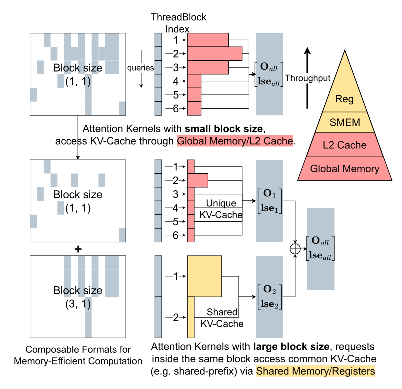
这个做法有两个要点。第一，它不移动任何 KV 数据，只是为两个子矩阵分别计算 indptr 和 indices。第二，它依赖“先验知识”：哪些请求共享前缀，需要推理引擎告诉 FlashInfer（比如并行采样时，同一个提示生成的 n 个回答必然共享提示部分；基数树也天然知道哪些请求挂在同一个节点下）。
省下的是什么，可以粗算一下（推算）：假设 64 个请求共享一段 32K token 的前缀，单一格式下这段前缀的 KV 要被 64 个线程块各读一遍（L2 缓存能挡掉一部分，但 32K 个 token 的 KV 远超 L2 容量），可组合格式下只需读一遍。论文附录 G.2 的内核测量印证了这一点：
论文也坦白说明，这么大的内核加速不会等比例地变成端到端的收益，因为真实负载里的共享前缀通常没有这么长（§4.5 的端到端数字只有 13%–17%）。在 FlashInfer 的代码里，这个功能叫“级联注意力”（cascade attention），对应 MultiLevelCascadeAttentionWrapper 等接口，最早在 2024 年 2 月的项目博客里发布。
3.3 计算模板：从分散的显存到连续的共享内存
GPU 的线程以 32 个为一组（warp）一起执行。当一个 warp 的 32 个线程读取显存里连续的一段地址时，硬件能把它们合并成几次宽的读取（合并访存），带宽利用率最高。从 Ampere 开始，GPU 提供了异步拷贝指令（在机器码层面叫 LDGSTS，CUDA 里叫 cp.async）：线程发出“把这段显存拷进共享内存”的命令后不必等它完成，可以先去做别的计算，从而把搬运和计算重叠起来。Hopper 又增加了 TMA（Tensor Memory Accelerator）：一个专门的硬件单元，给它一个张量的起点、形状和步长，它就能自己把整块数据搬进共享内存，几乎不占线程的寄存器和指令。TMA 的前提是数据按固定步长排布（仿射寻址）。Hopper 上的这些特性在 FlashAttention-3 精读页 2.3 节有详细讲解。
论文用 CUDA 和 CUTLASS 写了一套 FlashAttention 模板，同时支持稠密和块稀疏两种 KV，覆盖从 Turing 到 Hopper 的 NVIDIA GPU（sm75 到 sm90a）。到 Ada（sm89）为止用 FlashAttention-2 的算法，Hopper 上用 FlashAttention-3 的算法。在此基础上的改进有四项：稀疏 tile 搬进共享内存的方式、更多的 tile 大小选择、针对 GQA 优化的访存模式，以及可定制的注意力变体。前两项和第三项在本小节和下一小节讲，第四项在 3.5 节讲。
因为 FlashInfer 支持任意块大小，块不一定对齐 Tensor Core 的形状，所以读数据要用 §2.3 说的“先收集、再稠密计算”：把散落在显存各处的 KV 行搬到共享内存里连续的区域，然后照常做稠密的矩阵乘。一条 Tensor Core 指令的输入，可以来自块稀疏矩阵里不同的块。对于稀疏的 KV，每一行的地址要先查 BSR 的 indices 数组算出来；对于连续存放的稠密 KV，地址是行号的一个仿射变换（起点加行号乘步长）。
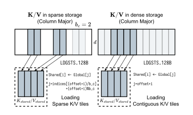
这样做之所以不会太慢，是因为 KV 缓存的最后一维（头维度 \(d\)，通常是 128 或 256）始终是连续的：一个 token 的一个头就是 \(d\) 个连续的数，FP16 下 128 维正好 256 字节，足够一个 warp 做合并访存，也和 GPU 的缓存行大小匹配。FlashInfer 用 128 字节宽的 LDGSTS 异步拷贝来尽量吃满带宽。Hopper 的 TMA 本可以搬得更快，但它不支持这种“每一行地址都要查表”的非仿射访问，所以 FlashInfer 只在 Hopper 上读连续的 KV 时用 TMA，其他情况退回 Ampere 风格的异步拷贝。数据进了共享内存以后，稀疏和稠密两种实现就汇合了，后面的计算完全相同，只有加载模块不同。
这种“查表读取”到底要付出多少代价？附录 B 用页大小为 1 的分页 KV（最细的向量稀疏）和连续 KV 做了对比，query 头和 KV 头都是 32 个，头维 128，改变批大小和序列长度：
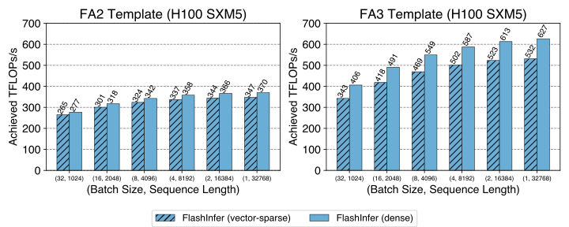
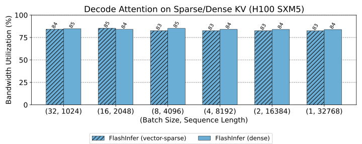
附录 B 解释了 FA3 模板上差距更大的原因：连续 KV 在 FA3 模板里用 TMA 加载，而稀疏读取用不了 TMA（它只支持固定步长），只能靠 Ampere 风格的异步拷贝和手工计算指针。这要多占寄存器，为了不让寄存器溢出，只好用更小的 KV tile，于是性能差距变大。FA2 模板里稀疏和稠密都用异步拷贝、tile 大小相同，所以差距小。论文还提到，如果列块足够宽（比如 128 以上），每个块内部是固定步长，就能用 TMA 来读稀疏 KV；但块越宽，块稀疏格式就越不灵活，这一优化留作未来工作。
3.4 不同大小的 tile，以及 GQA 的头组融合
FlashAttention 类内核每次处理一个“tile”：\(T_q\) 行 query 对 \(T_{kv}\) 行 KV。tile 越大，每次搬进共享内存的数据被复用得越多，但占用的寄存器和共享内存也越多；一个 SM 的资源是固定的，tile 太大，一个 SM 上能同时驻留的线程块就少（占用率低），搬运和计算就难以互相掩盖。更要命的是 query 的 tile：如果解码时只有 1 行 query，却用 128 行的 tile，那么 tile 里 127 行都是空的，计算和寄存器全浪费了。
标准的 FlashAttention-2 只提供很少几种 tile 大小，例如 \((128,64)\)，这对 A100 上的预填充是最优的，对 query 很短的解码却很低效。另外，一种架构上最优的 tile 不一定适合另一种，比如 Ada（sm89）的共享内存较少，大 tile 会让占用率下降。为了适应服务场景里各种算术强度，FlashInfer 为 FA2 算法提供了 \(\{1,16,32,64,128\}\times\{32,64,128\}\) 共 15 种 tile 组合（query 方向 × KV 方向），并用两条启发式规则来选：
- 算出这个批的平均 query 长度（GQA 时把 query 长度和头组维度合在一起算，见下文），选出不小于它的最小 query tile。
- 把寄存器和共享内存的约束写成 KV tile 大小的函数，选出能让 SM 资源占用率最高的 KV tile。
对 query tile 为 1 的情况，FlashInfer 用 CUDA Core（普通的浮点单元）模板，因为 Tensor Core 指令的最小行数 \(m\) 是 16，用它来算 1 行太浪费；其他 query tile 用 Tensor Core。FA3 模板的 query tile 是 64 的倍数，这是 Hopper 的 WGMMA 指令的要求。tile 大小在编译时根据任务（解码、预填充等）和硬件能力确定；块稀疏矩阵的行块大小 \(B_r\) 就取 query tile 大小 \(T_q\)。
头组融合（附录 A）。GQA 让多个 query 头共用一个 KV 头。最直接的实现是每个 query 头分给不同的线程块，可这样一来，同一个 KV 头会被组里每个 query 头的线程块各读一遍，GQA 本可以带来的复用就浪费了，在 query 很短（比如解码）时尤其明显。FlashInfer 的做法是：每个 KV 头分给一个线程块，把组内的 query 头“折叠”进 query 长度这一维。这样一个线程块里有 \(g\times l_{qo}\) 行 query，它们共用同一个 KV 头，KV 只需搬进共享内存一次。
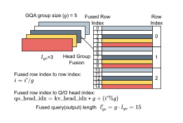
用一个例子把两条规则连起来（推算）：Llama 3.1 8B 有 32 个 query 头、8 个 KV 头，\(g=4\)。纯解码批里每个请求 \(l_{qo}=1\)，融合后的“平均 query 长度”是 4，规则 1 会选 query tile 16（\(\{1,16,32,\dots\}\) 中不小于 4 的最小值），于是可以用 Tensor Core；如果不做融合，平均长度是 1，只能选 1 和 CUDA Core。附录 A 也说明，头组融合主要用于 query 较短的情况；query 足够长时，query 维度本身就能提供足够的复用，融合就不那么关键了。类似的想法也出现在 TensorRT-LLM 的 XQA 内核里。
英文原文 §3.1 ↗ · §3.2 ↗ · 附录 A ↗ · 附录 B ↗
3.5 即时编译：用几个小函数描述一种注意力变体
高性能的 CUDA 内核通常写成 C++ 模板：头维度、数据类型、是否因果、tile 大小这些参数在编译时就定下来，编译器据此展开循环、分配寄存器，生成专门的机器码。这样最快，代价是每一种参数组合都要单独编译一份。组合数乘起来非常大：比如 3 种头维 × 3 种数据类型 × 3 种掩码 × 2 种 KV 布局 × 15 种 tile，就已经是 810 份（举例，推算），再加上各种位置编码和分数变换，事先全部编译好会让安装包和编译时间都膨胀到不可接受。
即时编译（JIT）的思路是：先不编译，等用户第一次真正用到某种组合时，再把对应的代码生成出来、当场编译，并把结果缓存起来，下次直接用。PyTorch 的 C++ 扩展机制就提供了这种“运行时编译并加载”的能力。
论文的出发点是：近年的模型对标准注意力做了各种修改，如果为每一种变体都在库里手写一个专门的内核，随着变体数量快速增长，这条路走不通。好在大多数变体和标准注意力的结构相同，只在少数几个位置做了小改动，可以共用 FlashAttention 内核的骨架。受 PyTorch 的 FlexAttention 启发，FlashInfer 设计了一个可定制的 CUDA 模板和一个 JIT 编译器：输入是变体的描述，输出是优化好的内核代码。变体描述由以下几类小函数（论文称为 functor）组成：
QueryTransform、KeyTransform、ValueTransform：在计算注意力之前，对 query、key、value 做的变换。OutputTransform：返回结果之前对输出做的变换。LogitsTransform、LogitsMask：在 softmax 之前对注意力分数（logits）做的变换，以及施加在分数上的掩码。
每个小函数都有固定的签名：输入是内核参数、当前的值，以及当前的 query 下标、key 下标、头下标，输出变换后的值。它们作为一个用户自定义“变体类”的成员函数写出来，这个类相当于把这些函数和它们需要的参数打包在一起。几个常见变体可以这样表达（数学形式由本站补充）：
- 分数截断（logits soft-cap），Gemma 2 和 Grok-1 用过：
LogitsTransform把分数 \(s\) 换成 \(c\cdot\tanh(s/c)\)，防止分数过大。 - 滑动窗口注意力：
LogitsMask只保留满足 \(0\le i-j\lt w\) 的位置（第 \(i\) 个 query 只看最近 \(w\) 个 key）。 - 自定义掩码（比如投机解码的树状掩码）：同样写在
LogitsMask里。 - 不用 softmax 的注意力：变体描述里有一个开关可以关掉 softmax，从而支持 FlashSigmoid 这类用 sigmoid 代替 softmax 的注意力，此时 \(p_{ij}=\sigma(s_{ij}\cdot\text{scale}+\text{bias})\)，各位置的权重不再需要归一化。
- 把其他算子融合进注意力：
QueryTransform和KeyTransform让归一化、RoPE 位置编码、甚至投影（如 DeepSeek 的 MLA）可以在内核里顺手做掉，省掉一次单独的读写。§4.4 的 StreamingLLM 实验就是用这一点把 RoPE 融合进了注意力。
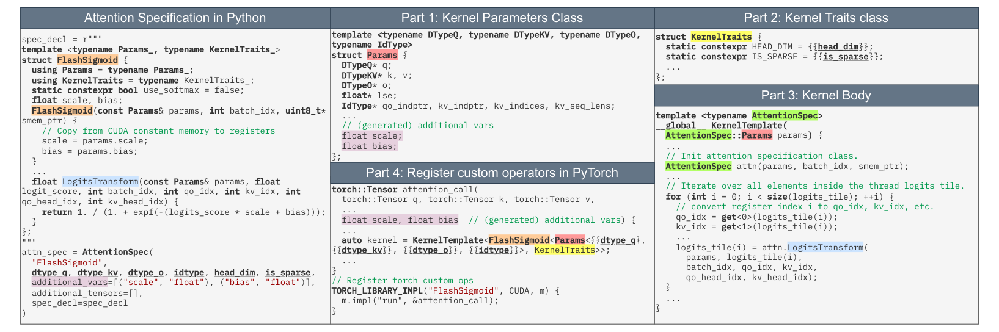
FlashSigmoid（声明 use_softmax = false，有 scale 和 bias 两个参数，LogitsTransform 返回 \(1/(1+e^{-(s\cdot\text{scale}+\text{bias})})\)），再用 AttentionSpec(...) 声明数据类型、头维度、是否稀疏和额外参数。右边四栏是生成结果：第 1 部分，内核参数类 Params 里自动加上了 scale、bias；第 2 部分，KernelTraits 里填入头维度和是否稀疏；第 3 部分，内核主体对 logits tile 里的每个元素调用 attn.LogitsTransform(...)；第 4 部分，把生成的内核注册成 PyTorch 的自定义算子。因为变体描述接受的是一段 CUDA 代码字符串，用户可以在里面使用 PTX 指令甚至自己的库。JIT 编译器把变体类和其他信息插进模板，生成完整的 CUDA 代码，交给 PyTorch 的 JIT 机制编译，并注册为自定义算子；也可以通过与框架无关的 DLPack 接口编译给其他运行时使用。项目在 v0.2 发布博客（2024-12）里给出的数字是：在服务器级 CPU 上，Llama 模型用到的全部内核可以在 15 秒内即时编译完。
论文 v2 新增的讨论一节（§6）把这个模板能表达的范围概括成一个式子：
\(f_q,f_k,f_v\) 是作用在 query、key、value 上的变换，\(f_{\text{logits}}\) 是对分数的变换和掩码，\(\mathrm{scan}\) 是沿 key 方向的归约（标准注意力里就是在线 softmax），\(f_{\text{epilogue}}\) 是输出前的收尾。论文认为这覆盖了大多数注意力函数，包括 MLA 和线性注意力里块内（intra-chunk）的那部分计算。
为什么用 CUDA/CUTLASS 而不是 Triton（附录 C）。第一，CUTLASS 支持 warp 专业化、TMA 这些 GPU 新特性，而它们在当时的 Triton 里还处于实验阶段或不支持。第二，Triton 的抽象停留在 tile 层面，CUDA/CUTLASS 则能精细地控制每个线程的寄存器，便于把 PTX 内建函数这类底层优化直接放进 JIT 模板。论文也说明，负载均衡调度器（§3.6）基本与后端无关，将来可以接入 Triton 或移植到其他硬件。
和 FlexAttention 比一比（附录 G.1）。FlexAttention 提供了类似的“用几行 Python 写变体”的接口，再编译成 Triton 实现的块稀疏 FlashAttention。论文在 H100 80GB SXM 上用 AttentionGym 基准比较了四种变体的前向速度（批 16、16 个头、头维 128，CUDA 12.4、Triton 3.2）：
| 变体 | 序列 512：Flex / FlashInfer | 序列 4096 | 序列 16384 |
|---|---|---|---|
| 因果注意力 | 209 / 250（1.20×） | 421 / 548（1.30×） | 454 / 612（1.35×） |
| 分数截断（soft-cap） | 242 / 336（1.39×） | 403 / 490（1.21×） | 410 / 521（1.27×） |
| ALiBi 偏置 | 253 / 404（1.60×） | 426 / 561（1.32×） | 435 / 578（1.33×） |
| 滑动窗口（窗口 1024） | 207 / 236（1.14×） | 368 / 385（1.04×） | 368 / 381（1.03×） |
单位 TFLOPs/s，取自原文附录 G.1 表 1–4（四舍五入到整数）；括号里是 FlashInfer ÷ FlexAttention，为本站推算。表中省略了 1024、2048、8192 三列。
FlashInfer 在所有设置下都更快，论文把原因归于 Hopper 的 warp 专业化、TMA 以及 CUTLASS 在寄存器层面的精细控制，并预计 Triton 完整支持这些特性后差距会缩小。作为参照，因果注意力在 16K 长度时 612 TFLOPs/s 约为 H100 FP16 稠密峰值（989）的 62%（推算），和 FlashAttention-3 论文里同类设置的水平相当。
3.6 负载均衡调度：把长请求切开，再把工作平均分给所有 SM
一个内核启动时会指定若干个线程块（CTA），GPU 把它们分派到各个 SM 上执行，一个 SM 同一时刻能跑的线程块数量有限。H100 SXM 有 132 个 SM。如果一个内核的工作是按“每个请求一个线程块”来分的，而批里有一个 3 万 token 的长请求和一堆几百 token 的短请求，那么短请求的线程块很快做完，它们所在的 SM 就闲下来，整个内核要等那个长请求的线程块算完才能结束。这就是负载不均衡。类似的还有波次量化（wave quantization）：线程块的数量不是 SM 数量的整数倍时，最后一“波”只有少数几个 SM 在干活。
矩阵乘法里有两个经典对策。Split-K 把归约的那一维切成几段，交给不同线程块，最后把部分和加起来；Flash-Decoding 把这个思路用在了解码注意力上（沿 KV 长度切）。Stream-K 更进一步，把全部工作看成一条连续的流，平均切给固定数量的线程块，每个线程块常驻 SM、处理完一段再接着处理下一段（这种常驻的线程块叫持久化内核，persistent kernel）。
还有一个容易被忽视的问题：浮点加法不满足结合律，\((a+b)+c\) 和 \(a+(b+c)\) 的最后几位可能不同。Stream-K 常用原子加法把各段结果累加到同一个位置，各段谁先完成谁先加，顺序每次都可能不同，于是同样的输入可能得到略有差别的输出。
FlashInfer 的负载均衡调度算法要做的，是把工作尽量平均地分给所有 SM，减少 SM 空闲的时间。它的输入是每个请求在 query/输出方向和 KV 方向上的长度，输出两样东西：每个线程块要处理哪些工作，以及部分输出到最终输出的对应关系。算法受 Stream-K 启发，但刻意不用原子加法，因为服务场景需要确定的输出：只要给定的各请求长度相同，合并的顺序就完全确定。算法如下（论文 Algorithm 1，省略了头这一维）：
- 输入：各请求的 query 长度 \(l_{qo}(i)\)、KV 长度 \(l_{kv}(i)\)，以及 query tile 大小 \(T_q\)。
- 定义一个工作块的代价：\(\mathrm{cost}(l_q,l_{kv})=\alpha\,l_q+\beta\,l_{kv}\)，\(\alpha,\beta\) 是超参数。直观地说，处理 query 有固定的开销（读 query、写输出），处理 KV 的开销和 KV 长度成正比。
- 计算 KV 分段的最大长度：
$$L_{kv}\leftarrow\frac{\sum_i \left\lceil l_{qo}(i)/T_q\right\rceil\cdot l_{kv}(i)}{\#\text{CTA}}$$分子是全部工作量：每个请求被切成 \(\lceil l_{qo}(i)/T_q\rceil\) 个 query tile，每个 tile 都要扫一遍这个请求的整条 KV。除以线程块总数，就是“理想情况下每个线程块该分到多少 KV”。
- 把每个 query tile 的 KV 切成长度不超过 \(L_{kv}\) 的若干段，每一段是一个工作块，编号为 \(w\)，长度为 \(l_{kv}(w)\)。
- 把所有工作块按长度从大到小排序。
- 用一个优先队列记录每个线程块当前的累计代价，初始都是 0。
- 重复直到工作块分完：取出当前累计代价最小的线程块，把剩下的工作块里最长的那个分给它，更新它的累计代价。
第 5–7 步是调度理论里经典的“最长任务优先”（LPT）贪心算法：先把大块的工作分出去，再用小块去填平各线程块之间的差距。用一个小例子走一遍（数字为本站编的，取 \(\alpha=0\)、\(\beta=1\)）：4 个解码请求（\(T_q=1\)），KV 长度分别是 8000、2000、1000、1000，假设只有 4 个线程块。
- 朴素做法：一个请求一个线程块。最长的线程块要处理 8000，其余三个分别只有 2000、1000、1000，做完就闲着；总时间正比于 8000，线程块的平均利用率只有 \(12000/(4\times8000)=37.5\%\)。
- FlashInfer：\(L_{kv}=12000/4=3000\)。请求 R0 被切成 3000、3000、2000 三段，其余请求不用切。六个工作块排序后是 3000、3000、2000、2000、1000、1000，依次分给当前最闲的线程块，最后每个线程块恰好都是 3000。R0 的三段各自输出一个注意力状态，再用 \(\oplus\) 合并成最终结果。总时间正比于 3000 加上一次很小的合并，在这个玩具例子里快约 2.7 倍（推算）。
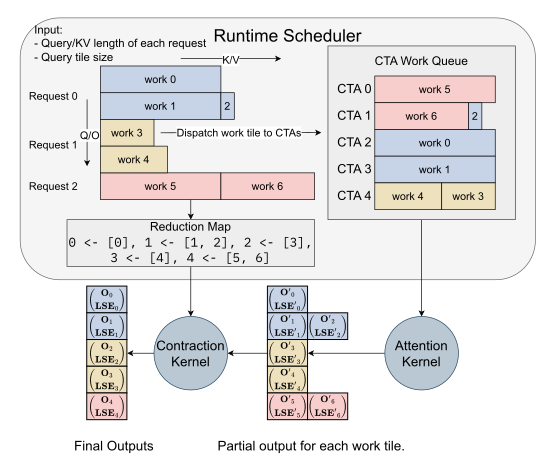
因为一些长 KV 被切成了几段，注意力内核不会直接写出最终结果，而是先写出每个工作块的部分输出（注意力状态），存在用户提供的工作区（workspace buffer）里；最终输出由合并内核用 §2.2 的 \(\oplus\) 把相关的部分输出合成。FlashInfer 实现了能处理“每个输出由不同数量的部分合成”的高效合并算子。
每个线程块的工作队列和归约表都由调度器在 CPU 上算出，然后异步拷贝到 GPU 工作区里的一块特定区域，作为持久化的注意力内核和合并内核的输入。调度器每生成一步运行一次（因为每一步各请求的长度都变了），但同一步里所有层的注意力面对的长度完全一样，所以算一次计划可以给所有层复用，CPU 上的开销被几十个层摊薄。
3.7 plan / run 与 CUDA Graph：动态调度怎么和“静态录制”共存
CPU 每启动一个 GPU 内核，都有几微秒的固定开销。解码一步只算 1 个 token，每个内核本身也很短，而一个几十层的模型一步要启动几百个内核，启动开销加起来可能和计算时间相当。CUDA Graph 的办法是：先把一整步要启动的所有内核“录制”下来，以后每一步只需让 GPU“重放”这张图，一次提交就执行全部内核。代价是录制时每个内核的参数（指针和标量）、线程块数量都被冻结了，重放时不能改。于是，凡是依赖当前批长度的东西——比如“启动多少个线程块”“每个线程块处理哪段数据”——都不能再作为内核参数随步变化。
论文把自己的接口设计归功于并行计算里的检查器–执行器（inspector–executor）模型：处理不规则的工作负载时，先用一个“检查器”分析数据的形状、算好执行计划，再让“执行器”按计划高效地执行，计划可以反复使用。
FlashInfer 保证注意力和合并两个阶段都与 CUDA Graph 兼容，做法是三条：第一，两个阶段都是持久化内核，线程块数量在编译时就固定，每一步都用同样的数量启动；第二，工作区的每一部分（存计划、存部分输出）都放在固定的偏移量上，所以每一步传给内核的指针完全相同；第三，变化的只是工作区里面的内容——每一步的计划由 CPU 算好后拷进去，内核在运行时读它。论文 v2 还把两个阶段合并成了一个持久化内核，省去了阶段之间的额外开销。
推理引擎使用 FlashInfer 的方式（论文 Listing 1）可以概括为两个阶段：
具体地说（论文 §3.4）：用户初始化一个注意力 wrapper 时，提供变体描述、任务信息和自己分配的工作区；内核在初始化时即时编译并缓存。使用可组合格式时，FlashInfer 为每种块大小各建一个 wrapper。不同平均 query 长度、不同可组合格式配置的内核会被分别编译、分别录进不同的 CUDA Graph，运行时由推理引擎根据当前的 KV 缓存配置挑选最合适的那张图。plan 函数处理长度信息、生成负载均衡的计划，计划可以缓存，给长度信息相同的所有算子复用（比如同一步里所有层的解码注意力）；run 函数读入 query、key、value 和缓存的计划，算出注意力输出。CUDA Graph 可以录制 run，把一整步的注意力编进一张图；plan 在 CPU 上，不能被录制。
工作区怎么管理（附录 D）。FlashInfer 维护一块锁页的 CPU 内存和一块 GPU 工作区，用来存调度元数据和分段计算的部分输出。GPU 工作区被分成若干段，每段对应一个数组；每次 plan 先在锁页内存里算好元数据，再用 cudaMemcpyAsync 拷进对应的段。因为录进 CUDA Graph 后各段地址不能变，工作区要按每段可能的最大需求一次分好（D.1）。另一个优化是直写（D.2）：只有 KV 很长的请求才会被切分，短请求不需要合并，它们的结果直接写进最终输出，不经过工作区，既省空间也减轻合并内核的工作。部分输出的上限是（D.3）：
理由是：只有 KV 长度超过“总 KV 长度除以线程块数”的长请求才会被切分，切分的段数不超过线程块总数，每个切分最多产生两个需要合并的 tile，所以部分输出最多 \(2\times\#\text{CTA}\) 个；每个是 \(T_q\) 行、\(H_{qo}\) 个头、\(D\) 维输出加 1 个 LSE。线程块总数默认取 \(k\times\#\text{SM}\)，用 Tensor Core 的内核寄存器占用高，\(k\) 在 Ampere 上通常不超过 2，在 Hopper 上常常就是 1（每个 SM 一个常驻线程块）。代入一组数字（推算）：H100 有 132 个 SM，取 \(k=1\)、\(T_q=16\)、32 个 query 头、头维 128，上限是 \(2\times132\times16\times32\times129\approx1.74\times10^7\) 个数，按每个数 4 字节算约 70 MB。作为对照，vLLM 今天给 FlashInfer 后端的默认工作区是 394 MiB（环境变量 VLLM_FLASHINFER_WORKSPACE_BUFFER_SIZE 的默认值，2026-10 文档）。
附录 E 和 F 的两点补充。其一，Nanoflow 这类系统把矩阵乘、注意力和通信放在不同的 CUDA 流上同时跑，各自只占一部分 SM；FlashInfer 允许用户在 plan 里指定可用的 SM 数，调度器据此分配工作。其二，很多模型用 FP8 存 KV 缓存来省显存和带宽，FlashInfer 实现了混合精度注意力：query 和输出保持 FP16，KV 用 FP8 存储，在内核里用快速的数值转换和片段重排做反量化。论文说这样“不会明显损失数值精度”，但没有给出精度的测量结果。
英文原文 §3.3 ↗ · §3.4 ↗ · 附录 C ↗ · 附录 D ↗
4 实验：端到端、内核、长上下文、并行生成
4.1 实验设置
被测的是 FlashInfer v0.2（2024-12 发布）。硬件是 NVIDIA A100 40GB SXM 和 H100 80GB SXM，软件为 CUDA 12.4、PyTorch 2.4.0，KV 的存储和计算都用 FP16。端到端实验看两个延迟指标：首 token 延迟（TTFT，从请求到达到第一个输出 token 的时间，主要反映预填充和排队）和 token 间延迟（ITL，相邻两个输出 token 之间的时间，主要反映每一步解码的耗时）；这两个指标的来历见 Sarathi-Serve 精读页 2.3 节。内核实验看利用率：解码看达到峰值带宽的百分比，预填充看达到峰值算力的百分比（理由见本页 §2.1）。
4.2 端到端：接入 SGLang，和它自带的 Triton 后端比
论文把 FlashInfer 接入 SGLang v0.3.4，和同一个 SGLang 使用 Triton（v3.0）写的注意力后端做对比，也就是说，除了注意力内核，其他部分（调度、显存管理、其他算子）完全相同。负载有两种：常用的 ShareGPT 对话数据集，以及一个合成负载 Variable，序列长度在 512 到 2048 之间均匀分布。测量在对延迟敏感的在线服务设置下进行：调整请求速率，使 P99 的首 token 延迟低于 200 ms。模型是 Llama 3.1 8B（1 张 H100）和 Llama 3.1 70B（4 张 H100）。
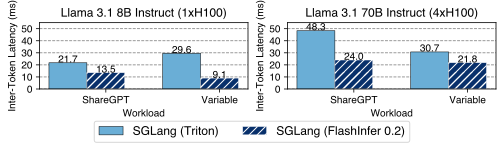
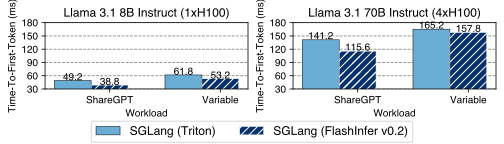
| 模型（GPU） | 负载 | 指标 | SGLang + Triton | SGLang + FlashInfer | 降低（推算） | TensorRT-LLM v0.13.0（仅 v1） |
|---|---|---|---|---|---|---|
| 8B（1×H100） | ShareGPT | ITL | 21.7 | 13.5 | 37.8% | 12.0 |
| 8B（1×H100） | Variable | ITL | 29.6 | 9.1 | 69.3% | 9.3 |
| 70B（4×H100） | ShareGPT | ITL | 48.3 | 24.0 | 50.3% | 26.5 |
| 70B（4×H100） | Variable | ITL | 30.7 | 21.8 | 29.0% | 21.7 |
| 8B（1×H100） | ShareGPT | TTFT | 49.2 | 38.8 | 21.1% | 35.6 |
| 8B（1×H100） | Variable | TTFT | 61.8 | 53.2 | 13.9% | 54.2 |
| 70B（4×H100） | ShareGPT | TTFT | 141.2 | 115.6 | 18.1% | 70.5 |
| 70B（4×H100） | Variable | TTFT | 165.2 | 157.8 | 4.5% | 151.9 |
单位毫秒，读自原文图 7 的柱顶标注；最后一列取自 arXiv v1 的图 7（v2 删去了这一对照）。“降低”一列为本站推算：(Triton − FlashInfer) ÷ Triton。
摘要里的“ITL 降低 29%–69%”就是上表前四行的范围：最小的 29.0% 是 70B 在 Variable 负载上，最大的 69.3% 是 8B 在 Variable 负载上。TTFT 的降低幅度小得多（4.5%–21.1%），因为首 token 延迟里有排队和预填充的矩阵乘，注意力只占一部分。
值得单独说一句的是最后一列。arXiv 第一版（2025-01）的这组实验里还有第三个对手 TensorRT-LLM v0.13.0，论文当时的说法是：FlashInfer 在 ShareGPT 上不如 TensorRT-LLM（尤其是 70B 的首 token 延迟，115.6 对 70.5 ms），在 Variable 负载上和它相近；两者的差距不只来自注意力内核，也来自其他内核（比如 all-reduce）和系统设计。正式版（v2）把 TensorRT-LLM 从图和正文里删掉了，但 §4.1 里仍残留了一句介绍它的话（“后者是为 NVIDIA GPU 优化的领先引擎，但注意力内核闭源”），读的时候会觉得前后对不上，原因就在这里。
4.3 内核：长短不一的批次里，和 FlashAttention 比
这组实验直接比较内核，对手是 FlashAttention 官方仓库当时的主分支（commit c1d146c，包含 FlashAttention-2 和 FlashAttention-3 的内核）。批大小固定为 16，序列长度取三种分布：恒定（全部 1024）、均匀（512 到 1024 之间均匀分布）、偏斜（Zipf 分布，平均长度 1024，即少数请求很长、多数很短）。预填充内核开启因果掩码，因为这是服务里的常见设置。
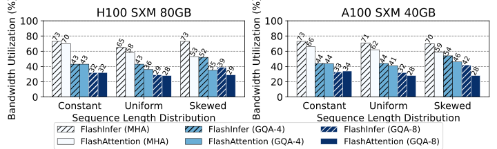
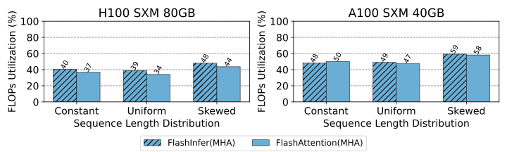
| 内核与配置 | 恒定 1024 | 均匀 512–1024 | 偏斜（Zipf） |
|---|---|---|---|
| H100 解码，MHA | 73 / 70 | 65 / 58 | 73 / 53 |
| H100 解码，GQA-4 | 43 / 43 | 43 / 36 | 52 / 35 |
| H100 解码，GQA-8 | 32 / 32 | 29 / 28 | 39 / 29 |
| A100 解码，MHA | 73 / 66 | 71 / 62 | 70 / 59 |
| A100 解码，GQA-4 | 44 / 44 | 44 / 41 | 54 / 46 |
| A100 解码，GQA-8 | 33 / 34 | 32 / 28 | 42 / 28 |
| H100 预填充（因果），MHA | 40 / 37 | 39 / 34 | 48 / 44 |
| A100 预填充（因果），MHA | 48 / 50 | 49 / 47 | 59 / 58 |
每格为 FlashInfer / FlashAttention，单位：解码为峰值带宽的百分比，预填充为峰值算力的百分比；读自原文图 8 的柱顶标注。
论文的解释有两条。第一，长度不均匀时 FlashInfer 明显更好，是因为负载均衡调度（§3.6）把长请求切开、平均分给了所有 SM；表里 H100 MHA 解码在偏斜分布下 73% 对 53%，是差距最大的地方。第二，即使在恒定长度下，FlashInfer 的解码也不差于 FlashAttention，是因为它按 query 长度挑选 tile（§3.4），而 FlashAttention 在解码时用的 tile 并不合适。
表里还能读出两件论文没有展开的事。其一，GQA 的带宽利用率比 MHA 低得多（H100 上 MHA 73%，GQA-8 只有 32%–39%）。原因是 GQA 的 KV 头少，同样长度下要读的 KV 只有 MHA 的 1/4 或 1/8，内核很快就读完了，固定开销（启动、读 query、写输出、合并）占的比例变大；换句话说，GQA 的解码本来就更快，利用率低不代表更慢。其二，预填充只达到峰值算力的 34%–59%，远低于 FlashAttention-3 论文在大形状下报告的最高约 75%（见 FlashAttention-3 精读页 4.7 节），因为这里的形状很小（16 条约 1024 token 的序列，因果掩码还砍掉一半计算），不足以填满 GPU。
4.4 长上下文：为 StreamingLLM 生成融合了 RoPE 的内核
StreamingLLM 是一种让模型在显存不变的情况下处理“无限长”输入的近似方法：KV 缓存里只保留最开头的几个 token（称为注意力汇点，attention sink）和最近的一段窗口，中间的全部丢掉。它的一个细节是：位置编码按 token 在缓存中的位置来算，而不是在原文里的位置。窗口每往前滑一步，缓存里每个 token 的位置都会变，所以不能像普通推理那样把“已经旋转过”的 key 存下来；只能存旋转前的 key，每一步计算注意力时重新对所有 key 施加 RoPE（旋转位置编码，见 RoFormer 精读页）。
如果 RoPE 和注意力是两个分开的内核，每一步都要先读一遍全部 key、旋转、写回显存，注意力内核再读一遍，key 的显存流量翻了一倍多。把 RoPE 融进注意力内核，就只需在读 key 时顺手旋转，省掉一次完整的读写。
FlashInfer 用 QueryTransform 和 KeyTransform 只写了大约 20 行额外代码，就生成了这种融合内核。端到端实验用 Vicuna-13B 在 MT-Bench 上做推理，测 StreamingLLM 的 token 间延迟，改变最近窗口的大小（1000、2000、4000 个 token）。对照有两个：论文作者自己优化过的 StreamingLLM 实现搭配 FlashAttention 的非融合内核（先单独做 RoPE），以及 StreamingLLM 的原始实现（作者发现它有不必要的开销，只作为参考）。
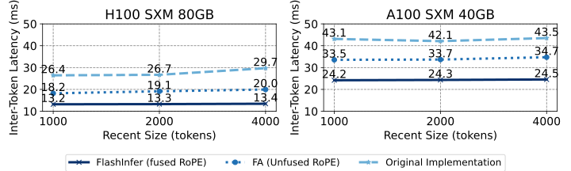
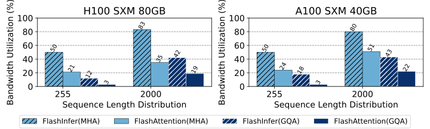
读出来的数字：H100 上三种窗口下，融合内核的 ITL 是 13.2、13.3、13.4 ms，非融合是 18.2、19.1、20.0 ms，原始实现是 26.4、26.7、29.7 ms；A100 上分别是 24.2、24.3、24.5 ms，33.5、33.7、34.7 ms，以及 43.1、42.1、43.5 ms。相对非融合版本的降低，按图上数字算是 H100 27.5%–33.0%、A100 27.8%–29.4%（推算），论文概括为 28%–30%。内核层面，融合 RoPE 内核的带宽利用率是非融合组合的 1.6–3.7 倍；例如 H100 上 MHA 的两组是 50% 对 21%、83% 对 35%，GQA 的两组是 12% 对 3%、42% 对 19%（读自图 9 下，较小的数值四舍五入后误差大，用它们算倍数不准）。
4.5 并行生成：可组合格式在共享前缀上的收益
OpenAI 的接口有一个参数 n：对同一个提示一次生成 \(n\) 个不同的回答（比如让智能体挑最好的一个）。这 \(n\) 个回答共享同一段提示，打开前缀缓存后，提示的 KV 只存一份。这时解码注意力天然分成两部分：所有回答共用的提示前缀，和每个回答各自的后缀，正是 §3.2 可组合格式的适用场景。
论文在 MLC-Engine 里实现了可组合格式（开启前缀缓存），用 Llama 3.1 8B（1×H100）和 70B（4×H100）在 ShareGPT 上测试，固定请求速率 16，\(n\) 取 1、2、4、8、16、32、64，对照是关闭可组合格式的同一个 MLC-Engine。
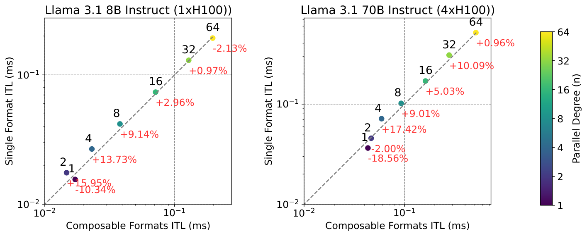
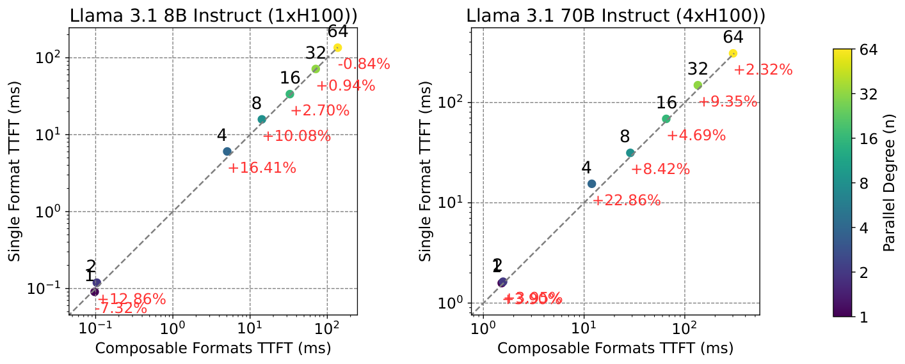
论文的结论是：在中等的并行度（\(4\le n\le32\)）下，可组合格式在 ITL 和 TTFT 上都稳定地带来提速，峰值出现在 \(n=4\)：8B 和 70B 的 ITL 分别降低 13.73% 和 17.42%，TTFT 分别降低 16.41% 和 22.86%。\(n\) 太小时没有收益，因为能合并的行太少，块的行数 \(B_r\) 增加得不够；\(n\) 太大时，计算不再以注意力为主（ShareGPT 的序列较短，尤其如此），收益趋于平缓。
把图上的红字全部读出来，可以看到更完整的样子。ITL：8B 依次为 \(n=1\) −10.34%、\(n=2\) +15.95%、4 +13.73%、8 +9.14%、16 +2.96%、32 +0.97%、64 −2.13%；70B 为 −18.56%、−2.00%、+17.42%、+9.01%、+5.03%、+10.09%、+0.96%。TTFT：8B 为 −7.32%、+12.86%、+16.41%、+10.08%、+2.70%、+0.94%、−0.84%；70B 在 \(n=4\) 到 64 为 +22.86%、+8.42%、+4.69%、+9.35%、+2.32%（\(n=1\)、2 两点重叠，约 +4%）。
- \(n=1\) 时可组合格式是变差的：8B 的 ITL 慢了约 10%，70B 慢了约 19%。论文只说“小 \(n\) 不受益”，没有点明这是倒退。原因可以理解：没有共享时强行拆成两部分算，多了一次合并和一套额外的内核调用。实际部署时必须按情况开关。
- 8B 在 \(n=2\) 时的 ITL 改善（+15.95%）其实比论文所说的“峰值” \(n=4\)（+13.73%）还大，正文和图在这一点上不一致；在 8B 上，\(n\ge16\) 时改善已不到 3%。
- 坐标轴标的单位是毫秒，但 ITL 的数值在 0.01–0.5 之间、TTFT 在 0.1 到几百之间；按毫秒理解，0.1 ms 的首 token 延迟连一次前向都不够，更可能是秒（本站判断）。无论单位如何，\(n\) 增大时 TTFT 上涨了三个数量级，说明在固定的每秒 16 个请求下，大 \(n\) 时系统已严重排队，那一段的比较是在过载状态下做的。
4.6 附录 G 的补充实验
正式版新增的附录 G 有五组实验。G.1（与 FlexAttention 比）和 G.2（共享前缀内核）已在本页 §3.5 和 §3.2 讲过，这里看另外三组。
G.3 负载均衡调度的消融。Llama 3.1 8B Instruct，1 张 H100 SXM5，SGLang + FlashInfer，分别开启和关闭负载均衡调度，并和 Triton 后端对比。三种负载：ShareGPT；输入长度在 512–2048 间均匀分布、输出固定 256；输入长度在 4096–16384 间均匀分布、输出固定 256。
| 负载（请求速率） | ITL：开启 / 关闭 / Triton | TTFT：开启 / 关闭 / Triton |
|---|---|---|
| ShareGPT（16 请求/秒） | 8.96 / 9.16 / 9.36 | 39.05 / 39.42 / 52.92 |
| 输入 U(512, 2048)（8 请求/秒） | 8.21 / 8.42 / 8.49 | 66.78 / 67.38 / 68.48 |
| 输入 U(4096, 16384)（1 请求/秒） | 8.63 / 13.89 / 11.08 | 411.02 / 421.60 / 566.30 |
单位毫秒，取自原文附录 G.3 表 6、表 7。
这张表比正文图 7 更有信息量。在前两种负载下，开不开负载均衡只差 2%–3%，而且三者的 ITL 都在 8–9.4 ms 之间，FlashInfer 相对 Triton 只快 3%–4%，远没有图 7 的 38%–69% 那么大（两组实验的请求速率设定不同，图 7 是“调到 P99 TTFT 低于 200 ms”，这里是固定速率）。负载均衡真正起作用的是长输入：U(4096, 16384) 下关掉它，ITL 从 8.63 ms 涨到 13.89 ms（慢 61%，推算），甚至比 Triton 的 11.08 ms 还慢。也就是说，在长上下文场景里，FlashInfer 相对 Triton 的 ITL 优势几乎全部来自调度器。
G.4 接入 vLLM。把 vLLM 的默认注意力后端和 FlashInfer 后端对比，固定请求速率 16：
| 后端（KV 精度） | 吞吐（token/秒） | ITL 中位数（ms） | TTFT 中位数（ms） |
|---|---|---|---|
| vLLM 默认（BF16） | 6062.89 | 10.42 | 35.85 |
| FlashInfer（BF16） | 6065.41 | 10.63 | 36.60 |
| vLLM 默认（FP8 E4M3） | 6015.86 | 12.56 | 39.74 |
| FlashInfer（FP8 E4M3） | 6020.32 | 10.92 | 37.93 |
取自原文附录 G.4 表 8。论文没有写明这组实验的模型、GPU 和 vLLM 版本。
用 FP8 KV 缓存时，FlashInfer 的 ITL 低约 13%；用 BF16 时反而略慢（10.63 对 10.42 ms），作者归因于 vLLM 集成层在宿主端的 Python 开销。吞吐量四行几乎一样，因为固定的请求速率下系统没有饱和，吞吐量只是等于到达速率乘以输出长度。
G.5 细粒度块稀疏：Quest。Quest 是一种长上下文的近似方法：每一步只挑出“可能重要”的若干个 KV 页参与注意力。论文在 H100 SXM5 上测了 Quest 的批量解码注意力内核（页大小 16，query 头和 KV 头各 32 个，头维 128），比较 FlashInfer、PyTorch SDPA 和 FlexAttention，说 FlashInfer 最多快 20 倍。表里的数字其实比这更悬殊：序列长度 32768、只选 64 页时，FlashInfer 22.4 μs，SDPA 1712 μs，FlexAttention 1169 μs（约 77 倍和 52 倍，推算）。但要看清 SDPA 和 FlexAttention 的延迟几乎不随所选页数变化：SDPA 显然算的是整条序列的稠密注意力，FlexAttention 则受限于它只支持较大的块。所以这里的倍数主要来自“少算了多少 token”，而不是同等计算量下内核的快慢；它说明的是 FlashInfer 能高效地执行这种以 16 token 为粒度的稀疏选择，而另外两者当时做不到。
4.7 结果的份量
把上面的数字放回测量条件里，可以这样看待它们：
- 对手是谁、是否最强。摘要里最醒目的“ITL 降低 29%–69%”，对手是 SGLang v0.3.4 自带的 Triton 注意力后端。这是一个合理的“只换注意力内核”的对照，因为其他部分完全相同；但它不是当时最强的系统。arXiv 第一版同时对比了 TensorRT-LLM v0.13.0，结果是 FlashInfer 在 ShareGPT 上更慢、在 Variable 上持平，正式版删掉了这组对比。内核对比的对手是 FlashAttention 当时的主分支，但论文没有说明 H100 上的预填充对比用的是 FA2 还是 FA3 的内核，也没有说明对 FlashAttention 用了哪个变长接口和什么参数（比如是否开启了分段解码）。
- 同一个结论，换个设置就小得多。图 7 的设置是“把请求速率调到 P99 TTFT 刚好低于 200 ms”，但每个设置下具体的请求速率、两个后端是否用同一个速率，论文都没有给出。附录 G.3 在固定速率下重测，ShareGPT 和短输入负载下 FlashInfer 只比 Triton 快 3%–4%；只有 4K–16K 的长输入，差距才明显（ITL 8.63 对 11.08 ms）。所以 29%–69% 应理解为特定负载点上的结果，而不是“换上 FlashInfer，延迟就降三到七成”。
- 硬件。端到端实验只在 H100 上做，内核实验覆盖 A100 和 H100。论文说模板支持 Turing 到 Hopper，但没有给出 Turing、Ada 上的数字；Blackwell 支持是后来（v0.4.0，2025-10）才加的。
- 指标。端到端只报告了中位数，没有报告尾延迟（P99），也没有报告固定延迟目标下的最大吞吐量（goodput）；并行生成和 vLLM 两组实验用的是固定请求速率，吞吐量相等并不说明系统能力相等。内核实验报告的是利用率百分比，没有给出绝对的耗时，也没有说明 GQA 实验里的头数和头维。
- 有损还是无损。FlashInfer 本身计算的是精确注意力，不改变模型输出的数学含义，所以这些加速都没有精度代价。例外是 FP8 KV 缓存（附录 F、G.4），论文没有报告任何精度测量；StreamingLLM 和 Quest 本身是近似算法，但对照组跑的是同一个算法，比较的只是内核。
- 倍数的来源。附录里最大的倍数（共享前缀内核 16 倍、Quest 场景 52–77 倍）都来自“少读或少算了多少数据”，而不是同等工作量下内核更快；论文自己也承认共享前缀内核的加速不会等比例地变成端到端收益。可组合格式在 \(n=1\) 时还会让 ITL 变差 10%–19%。
- 谁做的实验。所有实验都由 FlashInfer 作者完成，对照的“非融合 StreamingLLM”也是作者自己优化的版本。论文没有报告重复次数和波动范围。
总的来说，这篇论文最有分量的结论是定性的、并且被后来的广泛采用所印证：同一套块稀疏抽象和模板确实能覆盖分页、基数树、树状掩码和各种变体，负载均衡调度在长度差异大的批次里确实能把带宽利用率从五成多拉回七成多。具体的端到端百分比则高度依赖负载与对手，引用时最好带上条件。
5 相关工作：FlashInfer 站在哪几条线的交汇处
注意力内核的优化。这条线可以按时间串起来。NVIDIA FasterTransformer 的融合多头注意力（FMHA）减少了对全局显存的占用，但它的共享内存用量和序列长度成正比，无法处理长上下文；ByteTransformer 针对变长输入优化了 FMHA。FlashAttention 用在线 softmax 把共享内存用量压成常数，长上下文才成为可能；FlashAttention-2/3 又改进了循环结构，并让 softmax 和矩阵乘重叠。之后的工作开始关注“工作怎么分”：Flash-Decoding 把 Split-K 用在解码注意力上；LeanAttention 用 Stream-K 减少波次量化，但针对的是固定长度。FlashInfer 的定位是：把 FlashAttention-2/3 的模板扩展到稀疏注意力，并把类似 Stream-K 的优化用在变长序列上。NanoFlow（把矩阵乘、注意力和通信横向融合）和 POD-Attention（优化分块预填充里的注意力）是另外两个方向，论文认为 FlashInfer 的 JIT 框架可以扩展来生成这类融合内核。FlashDecoding++ 预先设定一个统一的最大值，把注意力状态的合并变成单纯的求和，从而能用 Hopper 的 TMA 归约写入来异步更新；论文认为它和自己正交，留作未来工作。
共享前缀的解码注意力方面，RelayAttention、Hydragen、ChunkAttention 和 Parrot 都研究过，但它们要求前缀和后缀的 KV 分开管理。FlashInfer 的可组合格式在同一张页表上工作，支持多级、多个前缀，推理引擎不必修改显存管理模块就能用上。
GPU 上的稀疏优化。FusedMM 研究了稀疏–稠密矩阵乘的融合，但没有 softmax，不能直接用于注意力；图注意力网络（GAT）的内核融合和 SAR 的稀疏注意力串行聚合（思路类似 FlashAttention）都没有用 Tensor Core。Blocksparse 库实现了基于 Tensor Core 的 BSR 矩阵乘；Chen 等、TC-GNN 和 Magicube 提出用向量稀疏格式来高效利用 Tensor Core。FlashInfer 在此基础上，让 FlashAttention 支持任意的块大小 \((b_r,b_c)\)。
注意力编译器。FlexAttention 提供了编写注意力变体的友好接口，编译成 Triton 实现的块稀疏 FlashAttention，并借助 PyTorch 编译器自动生成反向传播。FlashInfer 在它的接口上增加了 query/key 变换，并专注于向量稀疏和服务场景的负载均衡；它生成 CUDA 而不是 Triton 代码，因为在很多情况下 Triton 仍不如 CUDA 和 CUTLASS 快；论文还说 FlashInfer 可以作为 FlexAttention 前向计算的后端。Mirage 用概率等价验证来搜索矩阵乘和 FlashAttention 的分块策略，依靠 Triton 和 CUTLASS 生成代码，但不支持变长和稀疏的数据结构，也没有实现数值安全的 softmax，因此不能直接用于服务。
推理服务系统。Orca 提出了连续批处理；PagedAttention 用页表管理 KV 缓存；Sarathi-Serve 把解码“搭车”到分块预填充里；SGLang 用基数树做前缀缓存和 KV 管理。FlashInfer 用块稀疏注意力内核为这些机制提供了统一的计算方案。vAttention 指出，可以用 GPU 的虚拟内存硬件来做 PagedAttention 的地址转换，从而不需要专门的分页内核；论文的回应是，像 Quest 那样的动态 KV 稀疏仍然需要块稀疏内核，而且 FlashInfer 也能为连续存放的 KV 生成内核，两者可以结合。
6 讨论与结论：局限、通用性，以及两个版本的差别
局限。FlashInfer 目前只支持注意力的前向计算。要用于训练，需要开发可定制的反向注意力模板，作者把它列为未来工作。这也是它和 FlashAttention、FlexAttention 的一个根本区别：后两者同时服务训练和推理。
通用性。作者认为，FlashInfer 把“计算什么”和“怎么分块调度”分离开来：调度交给运行时调度器，而不是写死在注意力模板里，因此 Flash-Decoding、LeanAttention 这类不同的分块策略都可以表达，Algorithm 1 也就成了一个可以推广的负载均衡与减少波次量化的框架，同时还能针对每种架构选最优的实现（Turing/Ampere/Ada 用 FlashAttention-2，Hopper 用 FlashAttention-3）。Triton 这类框架虽然与 GPU 型号无关，但往往跟不上新硬件特性。模板的表达范围就是 §3.5 那个式子，覆盖了 MLA 和线性注意力的块内计算等新变体。
结论与未来工作。论文的结论重述了三个设计：统一的块稀疏存储与可组合格式提高显存效率，JIT 编译提供可定制性，负载均衡调度器应对输入的动态性；实验显示它在内核级和端到端指标上都表现很好。未来计划有两项：把更高层的领域专用语言（如 Mirage、FlexAttention）编译成 FlashInfer 的变体描述，以及生成其他后端的代码（论文引用了 NVDSL、ThunderKittens 和 Triton）。论文最后说明 FlashInfer 已开源，并已在生产级系统中大规模部署。
两个版本的差别。对照 arXiv v1 和 v2，主要变化有：
- §4.1 删去了与 TensorRT-LLM v0.13.0 的对比和相应的说明文字（见本页 4.2 节），只保留与 SGLang Triton 后端的对比。
- 新增 §6 讨论一节，以及附录 G 的五组补充实验（FlexAttention、共享前缀内核、负载均衡消融、vLLM 集成、Quest）。
- §3.3.1 增加了“把注意力和合并两个阶段合成一个持久化内核”的说明，§3.4 增加了与检查器–执行器模型的联系，§3.2.3 增加了通过 DLPack 编译给其他运行时的说明。
本页以 v2（即 MLSys 2025 会议论文集收录的版本）为准；图 7 中 TensorRT-LLM 的数字来自 v1。
英文原文 §6 ↗ · §7 ↗ · arXiv v1 ↗
7 后来怎么样了
论文获得了 MLSys 2025 的杰出论文奖（会议官网的奖项名称是 Outstanding Paper Award，当年共两篇；华盛顿大学和 CMU 的新闻稿称之为 Best Paper）。在此前后，FlashInfer 本身的变化比论文描述的要大得多。
7.1 从注意力库变成推理内核库
论文写的是一个“注意力引擎”，而截至 2026-10-20，项目 README 把自己描述为“面向推理的库和内核生成器”，为注意力、矩阵乘和 MoE 提供统一的接口，底下有 FlashAttention-2/3、cuDNN、CUTLASS 和 TensorRT-LLM 等多种后端实现，并自动为硬件和负载挑选。功能清单除了分页/不规则 KV、MLA、级联（即本文的可组合格式）、块稀疏、POD-Attention 等注意力内核外，还有 FP8/FP4（NVFP4、MXFP4）矩阵乘、分组矩阵乘、融合 MoE、免排序的 top-k/top-p/min-p 采样、自定义 all-reduce 与多节点 NVLink 通信、RoPE 和各种归一化。支持的 GPU 从 Turing（SM 7.5）一直到 Blackwell（SM 10.0/10.3、11.0、12.0/12.1），Blackwell 支持在 v0.4.0（2025-10）加入。
推动这个变化的是 NVIDIA 的深度参与。项目最初是 CMU、华盛顿大学和 OctoAI（后被 NVIDIA 收购）的合作；2025-06-13，NVIDIA 开发者博客（作者包括 Luis Ceze、Zihao Ye、Tianqi Chen、Vinod Grover 等）宣布，NVIDIA 正把自己性能最好的推理内核，包括来自 TensorRT-LLM 的内核，放进 FlashInfer 发布，方便 vLLM、SGLang 和自研引擎直接集成。2026-09-22 发布的 v0.7 又加入了实验性内核通道、基于 CUTLASS DSL 的 Blackwell 开源注意力与 MoE 实现、统一的 MoE 专家并行接口和新版自动调优器；截至 2026-10-20 的最新正式版是 v0.7.2（2026-10-15）。
7.2 vLLM 和 SGLang 今天怎么用它
以下均为两个项目官方文档或源码在 2026-10-20 的说法。
- vLLM 的注意力后端。不指定后端时，vLLM 按优先级挑第一个兼容的后端。标准注意力（MHA/MQA/GQA）在 Blackwell（SM 10.x）上的顺序是 FLASHINFER、FLASH_ATTN、TRITON_ATTN……，即默认用 FlashInfer；在 Ampere/Hopper（SM 8.x–9.x）上是 FLASH_ATTN 第一、FLASHINFER 第二（Hopper 上的 FlashAttention 后端用 FA3，见 FlashAttention-3 精读页）。文档里 FLASHINFER 后端有三种实现：原生实现（SM 8.x–9.x）、XQA（SM 9.0）和 trtllm-gen（SM 10.x，支持注意力汇点），都支持 FP8 KV 缓存，块大小可取 16 到 1024。MLA 模型在 Blackwell 上的首选是 FLASHINFER_MLA。
- vLLM 的其他算子。注意力之外，vLLM 默认开启 FlashInfer 的 top-k/top-p 采样器（
VLLM_USE_FLASHINFER_SAMPLER）和 FlashInfer 的 all-reduce（VLLM_ALLREDUCE_USE_FLASHINFER=1），默认允许用 FlashInfer 的 FP8 块缩放矩阵乘（VLLM_BLOCKSCALE_FP8_GEMM_FLASHINFER=1），FlashInfer 的若干 MoE 内核则需要手动开启。 - SGLang。标准注意力的默认后端：Hopper 上 CUDA 12.3 以上时用
fa3；Blackwell 上用trtllm_mha（投机解码 topk > 1 时除外）；Ampere、Ada 等其他架构上用flashinfer。MLA 模型在 Hopper 上默认fa3，在 Blackwell 上默认flashinfer，DeepSeek V3 会自动选trtllm_mla。SGLang 源码里写明，trtllm_mha和trtllm_mla两个后端调用的是“来自 FlashInfer 的 TRT-LLM 内核”。
合起来看：在 Hopper 上，两个引擎的标准注意力默认都用 FlashAttention-3，FlashInfer 是备选；在 Blackwell 上，两个引擎默认都经由 FlashInfer 调用内核（其中相当一部分是 NVIDIA 放进来的 TensorRT-LLM 内核）；在 Ampere 等更早的 GPU 上，SGLang 默认用 FlashInfer。论文实验时 SGLang 提供 FlashInfer 和 Triton 两个后端，这一点今天仍然保留。
7.3 确定性之后：批不变性
§3.6 提到，FlashInfer 的调度是确定的，但同一个请求在不同的批里可能被切成不同的段数。2025-09，Thinking Machines 的博客《Defeating Nondeterminism in LLM Inference》把这类“输出随批的组成变化”的问题讲清楚之后，FlashInfer 的解码接口加入了 fixed_split_size 和 disable_split_kv 两个选项，文档称之为“批不变性控制”：固定分段长度（以页为单位，建议取负载的平均长度）后，合并的顺序不再依赖批的组成，输出就与批大小无关；文档也提醒，这时不保证与 CUDA Graph 兼容。这正好说明了负载均衡与批不变性之间的张力：为了均衡而按整批情况动态切分，就会让单个请求的计算方式依赖于别人。背景见 批不变性拆解页。
7.4 FlashInfer-Bench：让 AI 来写内核
同一批作者的后续工作 FlashInfer-Bench（Shanli Xing、Yiyan Zhai 等，作者包括 Zihao Ye、Yineng Zhang、Luis Ceze、Tianqi Chen，arXiv 2601.00227 ↗，MLSys 2026）把目光转向“由大模型智能体编写 GPU 内核”。它定义了描述内核定义、工作负载、实现和评测的统一格式（FlashInfer Trace），从真实的服务轨迹里整理出数据集，提供兼顾正确性和性能的基准与排行榜，并用一个 apply() 机制把验证过的最优内核动态替换进 SGLang 和 vLLM。从论文里“用 JIT 模板让人写变体”到“让 AI 写内核并自动部署”，思路是一脉相承的：把内核的生成和替换做成一个开放的接口。
想看 FlashInfer 的可交互架构图和配套简答题，见结构拆解页；FlashAttention 一族的硬件演进见 FlashAttention-3 精读页和 FlashAttention-4 拆解页。
作者
单位按论文署名。背景只列可公开查证的信息：作者主页、实验室与机构页面、机构新闻稿，以及论文本身。
影响力
- 引用：见页首（Semantic Scholar 快照）。
- 发表与奖项：MLSys 2025（第八届机器学习与系统会议，2025-05-12 至 15 日，圣克拉拉）。会议官网奖项页列为 Outstanding Paper Award，当年获此奖的另一篇是《The Hidden Bloat in Machine Learning Systems》；华盛顿大学新闻稿和 CMU 新闻稿称之为 Best Paper。
- 开源：flashinfer-ai/flashinfer 截至 2026-10-20 有 6,717 个 star、1,621 个 fork，Apache-2.0 许可；仓库创建于 2023-07-22，早于论文一年半；项目博客 flashinfer.ai 首篇文章发布于 2024-02-02。
- 采用：项目 README 列出的使用者有 SGLang、vLLM、TensorRT-LLM、Hugging Face TGI、MLC-LLM、LightLLM 和 LoRAX。vLLM 和 SGLang 在 Blackwell 上默认经由 FlashInfer 调用注意力内核（见上一节，2026-10-20 的官方文档与源码）。NVIDIA 自 2025 年中起通过 FlashInfer 发布自己的推理内核。
延伸阅读
- 相关精读：FlashAttention、vLLM / PagedAttention、SGLang、FlashAttention-3
- FlashInfer 结构拆解：可交互的架构图、与 FlashAttention 的对比简答题。
- FlashAttention 1 / 2 / 3 结构拆解：分块、在线 softmax 与三代的差别。
- vLLM 拆解 与 SGLang 拆解：FlashInfer 要读的两种 KV 布局从哪来。
- 投机解码拆解：树状注意力的掩码。
- 批不变性拆解：为什么动态切分会让输出随批变化。
- FlashAttention-4 拆解：Blackwell 上的注意力内核。
- 推理基础：roofline、预填充与解码的访存特性。
- AI Infra 路线（旧版）
- 返回论文书架
本页是对论文的中文精读笔记，正文为本站撰写，并非翻译。数字与结论以原文为准：arXiv:2501.01005（v2，与 MLSys 2025 正式版对应）；第 4.2 节中 TensorRT-LLM 的数字取自 arXiv v1。原文图 1–12 取自 arXiv v2（作者 Zihao Ye、Lequn Chen、Ruihang Lai、Wuwei Lin、Yineng Zhang、Stephanie Wang、Tianqi Chen、Baris Kasikci、Vinod Grover、Arvind Krishnamurthy、Luis Ceze），以 CC BY-SA 4.0 许可发布，本站未做修改；按“相同方式共享”条款，这些图片在本页同样以 CC BY-SA 4.0 提供，再次使用时须署名并沿用该许可。其余示意图和简化图为本站绘制。